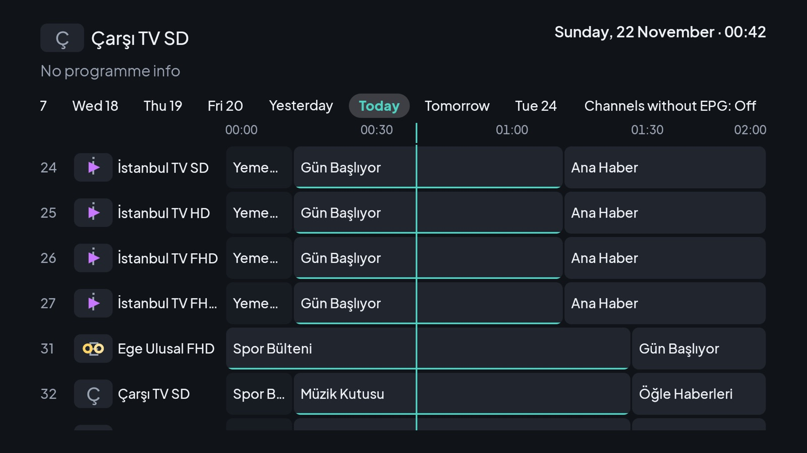
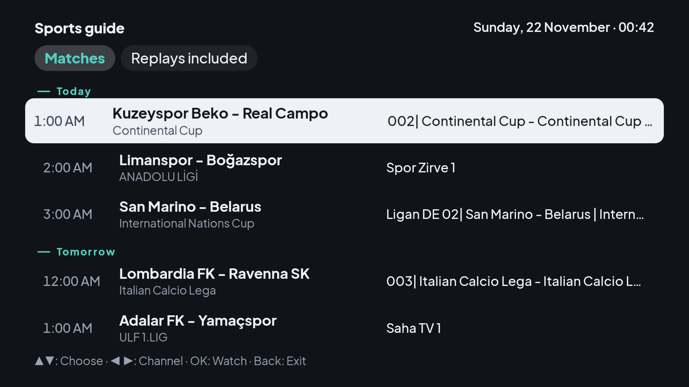
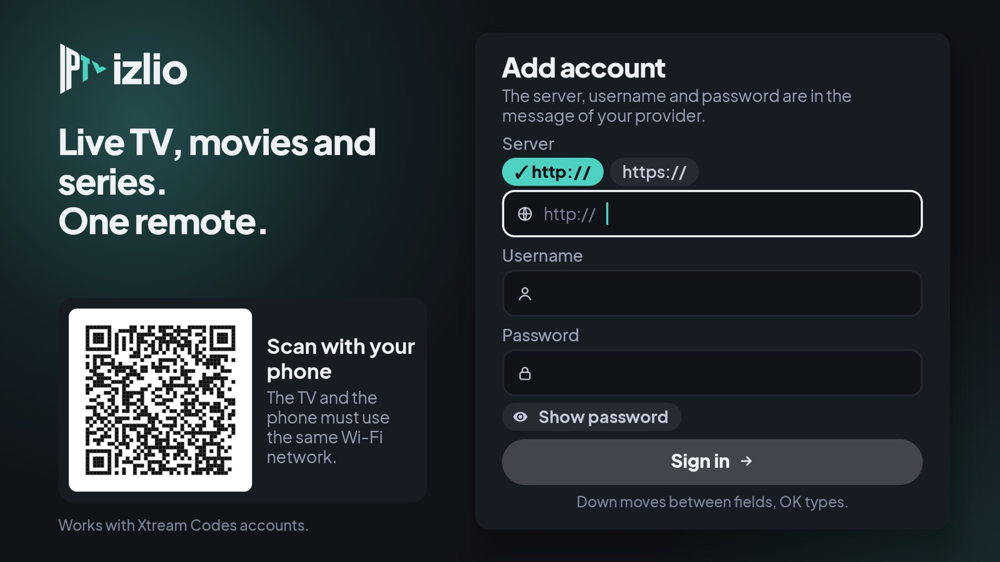
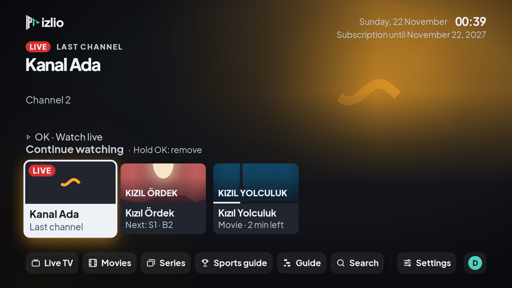
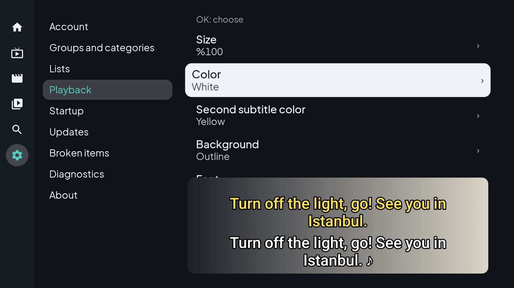
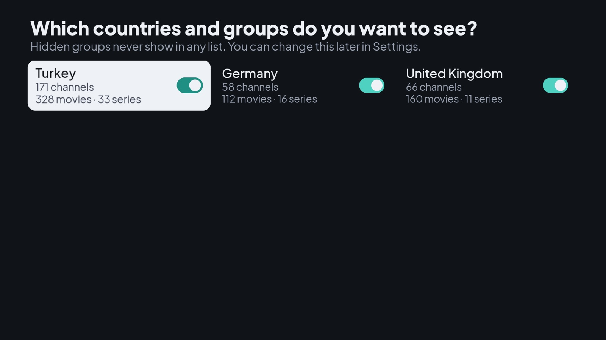
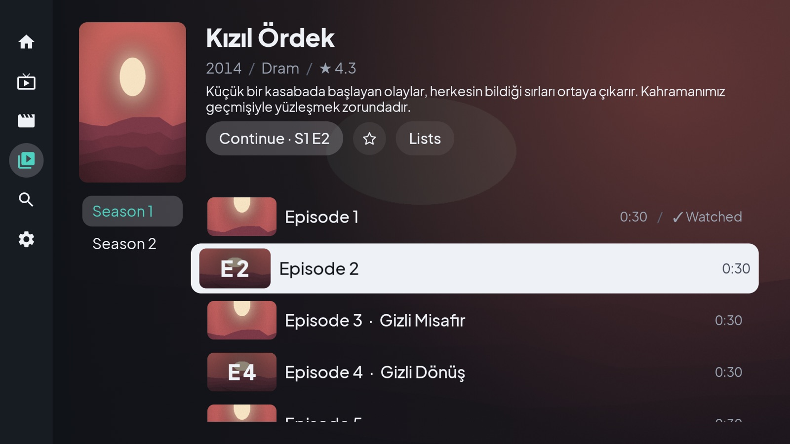

Live TV
Find a channel fast
Pick a country and a category on the left. See the channel list, a live preview, and the program that is on now and next. The program guide (EPG) is built in.

IPTV player for Android TV and Google TV
Live TV
Pick a country and a category on the left. See the channel list, a live preview, and the program that is on now and next. The program guide (EPG) is built in.
Player
Change channels with Up and Down. Press Left for the previous channel. The info bar shows the program and the time. The quick menu has audio, subtitles, picture and an external player. A broken stream reconnects by itself.

Program guide
Browse the guide grid with day tabs. Open a program to watch live or from the start. For past programs, "In archive" plays catch-up when the provider has an archive. For a later program, choose Remind me. The app shows a notice 1 minute before and at the start.

Sports
The sports guide collects the matches and events from the guide data of the sports channels. The list is grouped into Now, Today, Tomorrow and Later. A filter shows only live matches, or replays too. Press Left or Right to pick another channel for the same event, and OK to start it.

Sign in with your phone
The TV shows a QR code. Scan it, type the login on your phone, and send. Your phone and TV must be on the same Wi-Fi. The login goes directly to the TV, encrypted. It does not go through the internet or through us. Typing on the TV with the remote also works.

Home
The home screen has a Continue watching row. It shows the movies, episodes and live channels that you watched last. Open one to resume. You can remove an item from the row.

Subtitles
For movies and series, pick a first and a second subtitle. For example the original language and your language. Each one has its own color. You can also set the size, color, background and font of the subtitles, and a preferred audio language.

Show only what you watch
On first start, choose the countries and groups that you want to see. The others never show in any list. You can hide single categories too, and change it any time in Settings. A broken channel is hidden for 24 hours.

Movies
Browse movies by country and category. Keep your favorites and your own lists. Continue watching is one step away.

Movie details
The details page shows the plot, genre, length and rating. Press Resume to continue at the saved position, or start over.

Series
Open a series and choose a season and an episode. When an episode ends, a countdown starts the next one.

The app opens on your last screen, tab, category and channel. Movies and series continue at the saved position.
Settings > Diagnostics checks the internet, the provider address, the login, the channel list, the guide and a stream, step by step.
Built for the TV remote. Large text, clear focus, no touch needed.
A channel that does not open is marked and hidden for 24 hours.
Mark favorites and keep your own lists of channels, movies and series.
Type a few letters and see results for movies, series and channels.